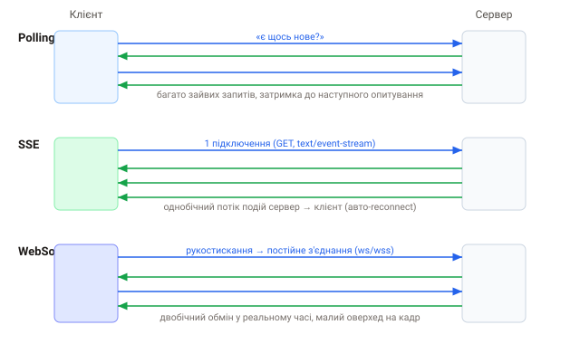

1. Проблема: HTTP-запит ініціює лише клієнт
Класичний HTTP влаштований так: клієнт запитує — сервер відповідає. Сервер не може сам «постукати» до браузера, коли зʼявились нові дані. Але чат, сповіщення, живі ціни, спільне редагування, індикатор «друкує…» потребують саме цього — сервер має надсилати оновлення сам, щойно вони стались.
2. Наївне рішення: polling
Найпростіше — опитувати сервер за таймером: «є щось нове? а тепер?». Працює, але марнує ресурси й додає затримку до наступного запиту.
// short polling — багато зайвих запитів
setInterval(async () => {
const res = await fetch('/api/messages?after=' + lastId);
const data = await res.json();
if (data.length) render(data);
}, 3000);Long polling — покращення: запит «висить», доки сервер не має що відповісти. Менше порожніх відповідей, але все одно постійні перепідключення. Обидва — обхідні шляхи; для справжнього реалтайму є кращі транспорти.
3. Три транспорти реального часу

- Polling — багато окремих HTTP-запитів; просто, але неефективно;
- SSE (Server-Sent Events) — одне з'єднання, однобічний потік подій сервер→клієнт поверх HTTP; ідеально для стрічок і сповіщень;
- WebSocket — одне постійне двобічне з'єднання; для чатів, ігор, спільного редагування.
4. Як обрати
- тільки сервер→клієнт (сповіщення, прогрес, live-лічильники) → SSE: простіше, працює поверх звичайного HTTP, автоперепідключення з коробки;
- потрібен обмін в обидва боки з низькою затримкою (чат, курсор, гра) → WebSocket;
- оновлення рідкісні й нема жорстких вимог до затримки → інколи вистачає й polling.
Правило великого пальця: починай зі SSE, якщо дані течуть лише від сервера — менше рухомих частин. Переходь на WebSocket, коли реально потрібен двобічний канал.
5. План розділу
- SSE:
EventSourceіtext/event-stream; - WebSocket-протокол і браузерний API;
- Socket.io: події, кімнати, fallback;
- патерни: broadcast, кімнати, presence, авторизація, масштабування;
- надійність: reconnect, heartbeat, доставка, керовані сервіси.